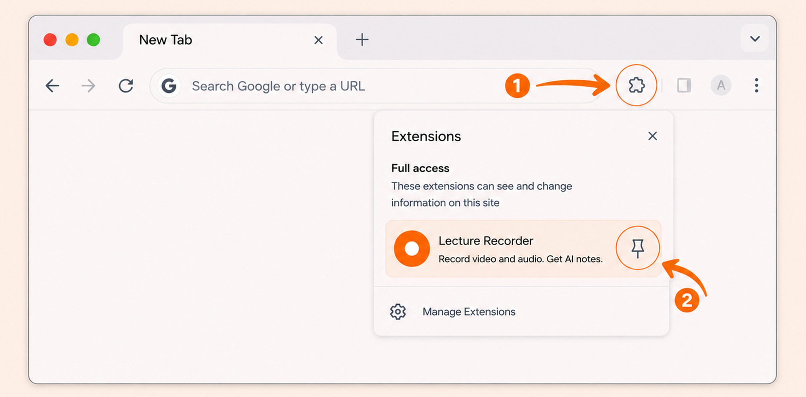
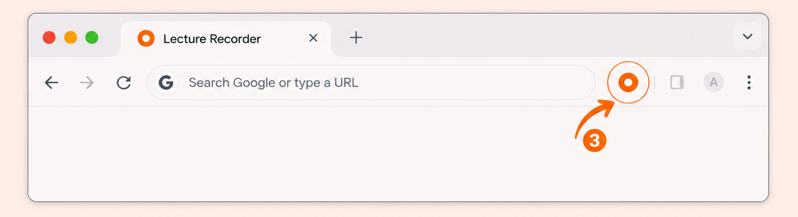

🎉 Lecture Recorder is installed
1Pin Lecture Recorder for quick access

Click the puzzle, then click the pin
2Click the icon to start recording

Now click the icon to start recording
Record audio and video. Get AI notes.
Use headphones for best audio quality.